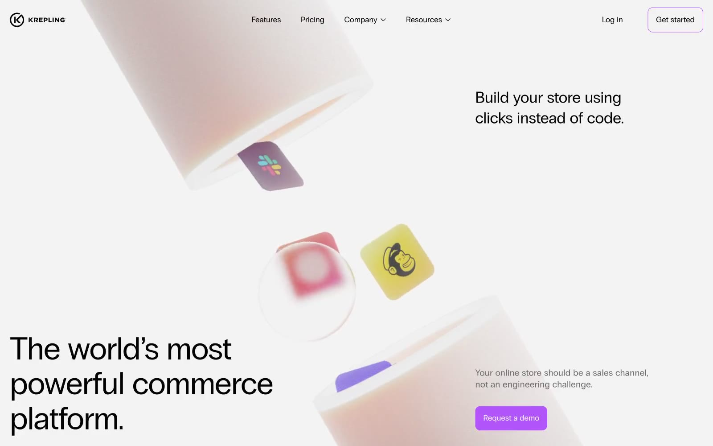

Krepling 的 Design.md 主题展示，围绕浅色界面、电商零售、AI、SaaS 产品组织页面。
Explore Krepling's light E-commerce design system: White Canvas #ffffff, Midnight Text #000000 colors, Regular, Inter typography, and DESIGN.md for AI agents.

#f1f1f1: #f1f1f1#000000: #000000#ffffff: #ffffff#171717: #171717#6c6b6b: #6c6b6b#b3b3b3: #b3b3b3#f9c2cf: #f9c2cf#635bff: #635bff#ffe01b: #ffe01b#4b154c: #4b154c#99e1f4: #99e1f4#93d33e: #93d33edisplay: Interbody: Intermono: ui-monospacehints: Inter,ui-monospace